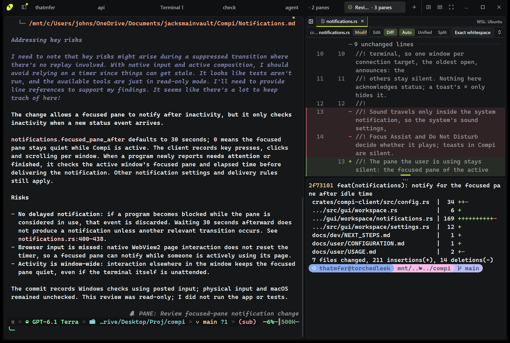
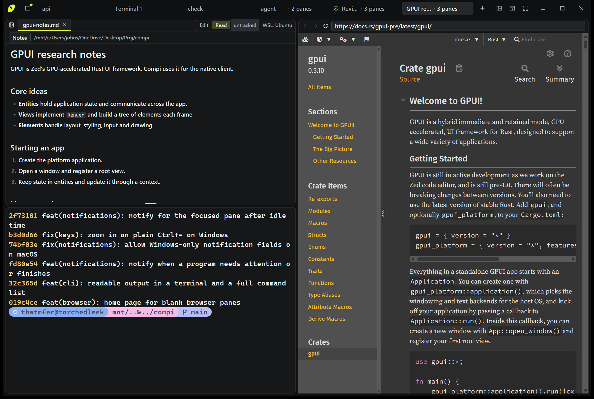
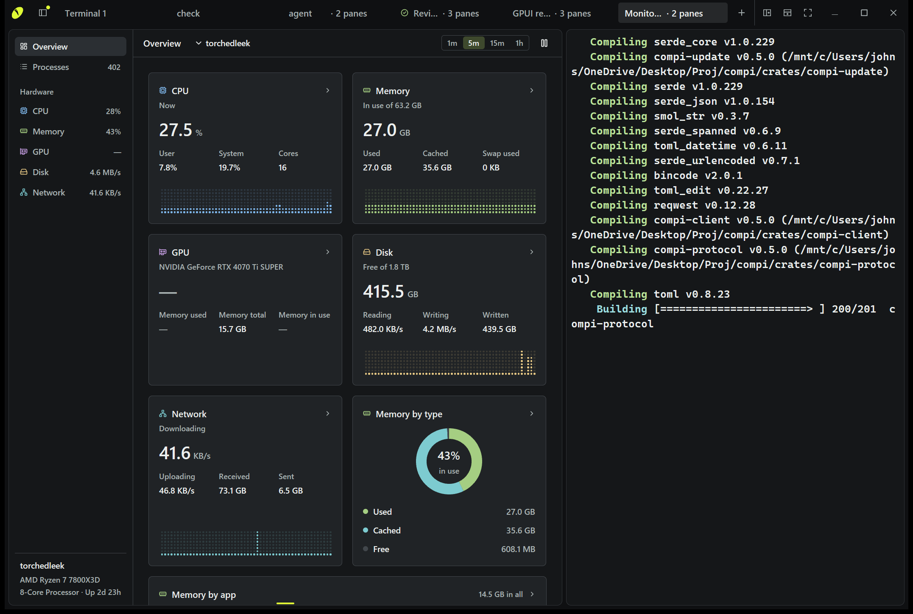

See what’s running.
Read pane IDs and program-reported state. Capture another terminal’s output without taking over its view.
Native terminal workspace · Windows & macOS
Run your preferred agents, write instructions and review their changes. Inspect the result beside the terminals doing the work.
Windows x64 + WSL2 · Apple Silicon, macOS 14+
Windows is unsigned. macOS is ad-hoc signed, not notarized. Your OS may warn on first launch. Installation help

01Shared controls
It can make room for another task, read a terminal’s output or open your app beside the work. You see the same workspace.
See the CLI reference ↗compi --json pane listcompi split --rightcompi browse http://localhost:3000Read pane IDs and program-reported state. Capture another terminal’s output without taking over its view.
Create a terminal, split the view or rearrange existing panes. Running processes stay where they belong.
Open a file, a diff or a browser pane for review. No mouse-driving needed.
Use whichever agent can run shell commands. Compi supplies the controls, not an agent harness.
02Edit · review · run
Give the agent direction in Markdown, review its changes and open the app to check the result. Keep the build running beside you.

01 / Write & look things up
Edit ordinary Markdown, switch to Read mode and keep a documentation page or local app beside it.
Browser inspection and automation come from your agent’s own browser tools. Compi provides the pane.
02 / Review the result
Bring up a diff beside the conversation. Inspect working changes or a past commit, stage changes and commit.
03 / Keep an eye on it
Keep terminal output visible while you inspect the machine it’s running on. Arrange the panes around the task.

03Leave · keep running · return
The window is a view into running work. Close it, reopen it and reconnect to the same shells.
Your terminals live in Compi’s background server. Closing the window doesn’t end their processes.
Supporting programs report when they need attention or finish. Compi can notify you instead of making you check every tab.
Click a notification to focus its terminal, or reopen Compi and pick up the same running work.
Restarting the server or rebooting ends running processes. Window persistence is not reboot survival.
In-app and Windows system notifications, with optional Windows sounds. macOS notifications remain unverified and have no sound in 0.5.0. Release details.